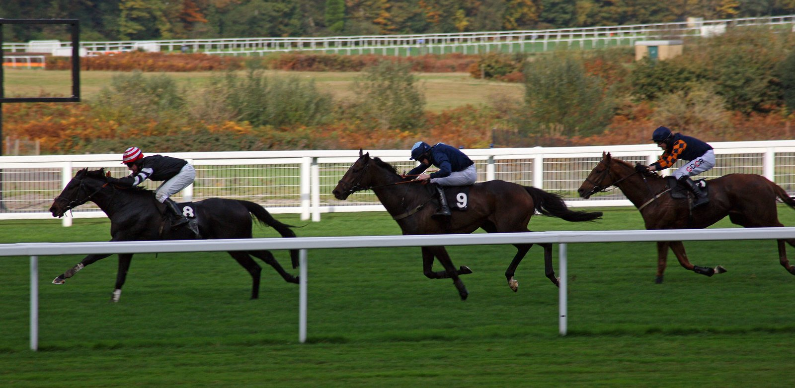

Western Fold resiste a Fil Dor por un hocico en el American Grand National
Gordon Elliott y Jack Kennedy repiten triunfo en Far Hills: Western Fold se impuso por un hocico a Fil Dor, el ganador del año pasado cuando lo preparaba el propio Elliott.

La carrera se decidió en el último obstáculo. Allí tomó la cabeza Western Fold, pero la llegada estuvo lejos de quedar resuelta. Fil Dor, tordo, contraatacó por el interior y peleó durante toda la recta final. Kennedy tuvo que sostener a su montura hasta la raya, y el margen en la meta fue el mínimo posible: un hocico.
Fil Dor buscaba repetir la victoria de 2025 en la misma prueba. Aquella vez corría para Elliott, que ahora se encontró a su antiguo pupilo como rival directo y lo batió con otro caballo de su cuadra. Western Fold llegaba a Nueva Jersey con un Grade 1 de steeplechase para novicios en su palmarés.
Para el preparador irlandés y su jockey es el segundo American Grand National consecutivo. Hace doce meses se desplazaron a Far Hills y se llevaron la carrera con Fil Dor. Esta vez el triunfo llegó con Western Fold.
El tercer puesto también fue para Elliott, con Zanahiyr. La lectura es sencilla: los tres primeros clasificados han salido de la misma cuadra, aunque uno de ellos ya no compita para ella.
Western Fold no fue el único éxito del irlandés en la jornada. Antes, Lizzie Twigg, un ejemplar de cinco años con proyección, había ganado el Foxbrook Champion Hurdle. Con esas dos victorias, Elliott hizo doblete en la reunión.
Fichas: Jack (caballo)
Por Martín Larrañeta